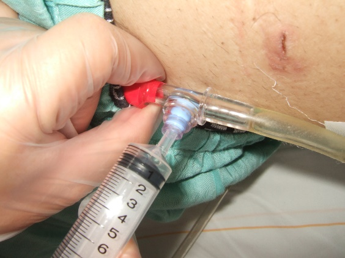
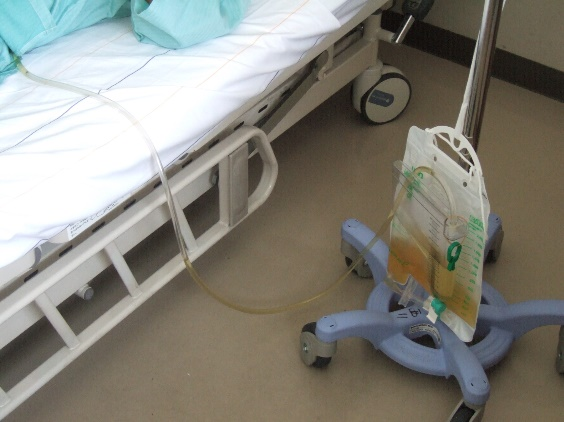
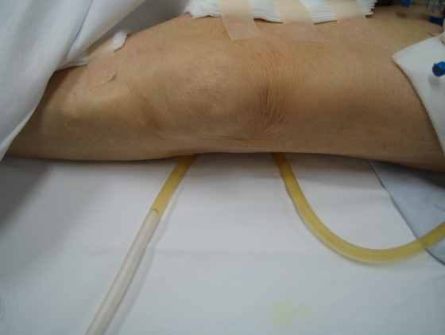
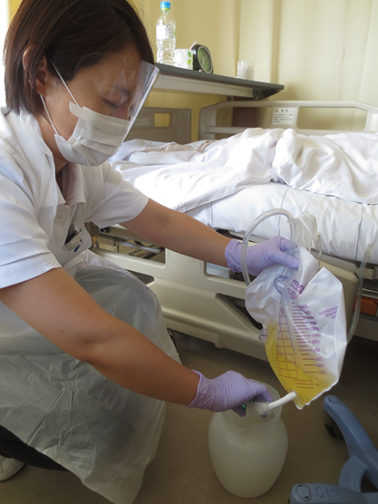
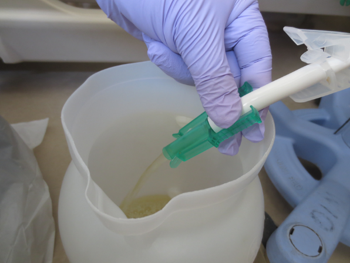

Ⅵ. 侵襲処置・医療器具関連感染防止策
2. 尿道留置カテーテル関連尿路感染予防対策
- 尿道留置カテーテル関連尿路感染
尿路感染の中で、尿道留置カテーテルに関連しておこる尿路感染を尿道留置カテーテル関連感染（catheter associated urinary tract infection；CAUTI）という。
- 尿道留置カテーテル関連尿路感染の感染経路と発生機序
尿道留置カテーテルにより微生物が膀胱内に侵入する経路は、カテーテルの外側を通るルート（図１）と内側を通るルート（図2）に大きく分けられる。
カテーテルの外側を通るルート
①挿入時に膀胱内に微生物が押し込まれて侵入
②会陰や直腸に定着している微生物が侵入
カテーテル
膀胱
②会陰や直腸に定着している微生物が侵入
①挿入時に
膀胱内に微生物が押し込まれて侵入
図2．カテーテルの内側を通るルート
カテーテルの内側を通るルート
③接続部の閉鎖が破られ、微生物が侵入
④排液口から微生物が侵入して尿を汚染
⑤バイオフィルムの形成による微生物の放出
③接続部の閉鎖が破られ、微生物が侵入
④排液口の閉鎖が破られ、微生物が侵入
⑤バイオフィルムの形成による、微生物の放出
カテーテル
尿バック
図1．カテーテルの外側を通るルート
図1．カテーテルの外側を通るルート
- 感染予防対策
- カテーテルの適応を判断する
- 感染予防対策
尿道留置カテーテルの留置期間が長いほど尿路感染のリスクは高くなる。下記のフローに基づいて定期的に適応を検討し、早期抜去に努める。
「ＳＴＥＰ2」
へもどる
Ｎｏ
尿道カテーテル挿入基準
定期的に必要性をアセスメント
カテーテルは抜去可能か？
抜去
【尿道留置カテーテル】
必要時、
採尿補助具の使用を検討
以下の挿入基準を満たしているか？
① 尿路の閉鎖がある場合
② 神経因性の尿閉がある場合
③ 泌尿器・生殖器疾患の術後に治癒を促進する場合
④ 重症患者の尿量を正確に把握したい場合
Ｙｅｓ
挿入しない
No
Yes
STEP1
STEP2
継続的な
カテーテル留置が不要の場合
に使用を検討
【間歇的導尿】
継続的なカテーテル留置が
必要な場合に使用を検討
「間歇的導尿」
へ移行
- 尿道留置カテーテル挿入時の管理
- 尿道口の清浄
- 尿道留置カテーテル挿入時の管理
尿道口が分泌物で汚染している場合は、微温湯で洗浄する。
- 手指衛生
挿入前後には手指衛生を確実に行う。
- 清潔操作
挿入中に清潔操作が確実に実施できるように患者の体位や照明を整え、手指衛生の後、滅菌手袋を着用し、無菌操作にてカテーテルを挿入する。

尿道留置カテーテル留置中の管理- 閉鎖状態の保持
- 尿道カテーテル・尿バッグは閉鎖式システムを用いる。
- 採尿時はサンプルポートから行う(図3）。
- 膀胱洗浄が必要な場合は３ウェイの膀胱洗浄用カテーテルを使用し、開放式では行わない。逆流防止
図3．サンプルポートからの採尿
- 尿が停滞しないように尿バックとカテーテルは患者の膀胱より低い位置を保つ（図4）。
- 移動時に安易に尿バックをベッドに上げる等して、膀胱より高くしない。


排尿チューブが体の下敷きになって、閉塞しないようにする（図5）。
図4.カテーテルと尿バックは患者の膀胱より低い位置を保つ
図5．カテーテルが体の下敷きになっている
- 交差感染の防止
- カテーテル挿入部や尿に触れる可能性がある場合は、手袋などの防護用具を着用し（図6）、処置前後の手指衛生を確実に行う。


尿を回収する場合は、ベッドパンウォッシャー等で洗浄・消毒した清潔な容器を用い、排液口を床や回収容器に接触しないようにする（図7）。
エプロン
手袋
アイガード
マスク
手袋
エプロン
マスク
アイガード
図6. 尿回収時の防護用具
図7. 排液口を回収容器に接触させない